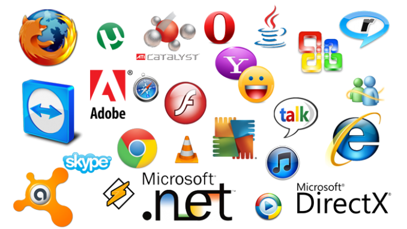

| INICIO |
CONCEPTOS BASICOS |
CLASIFICACION |
SOFTWARE LIBRE Y COMERCIAL |
SOFWARE COMERCIAL |
DESCARGAS |
Software libre y comercial

Breve historia del software
En los anos setenta del siglo xx, antes de la computacion cobrara auge, los vendedores de computadoras incluian software
creado por ellos mismos o por otros programadores para que los usuarios puedieran utilizarlo libremente.
A finales de esa decada las grandes companias comenzaron a incluir licencias para limitar el uso de su software y obligar a los usuarios
a comprarlo. Estas restricciones te impedian intercambiar, compatir o realizar modificaciones a los programas de computadora, acciones a las que anteriormente se tenia facil acceso.
Richard Stallman, programador desde los anos setenta, fundo la Free Software Foundation (Fundacion por el software libre), esta se dedicaa eliminar las restricciones sobre la copia,
redistriibucion, entendimiento y modificacion de programa de computadoras. Promociona el desarrollo y uso del software.
Se dedicaba principalmente a crear software libre, pero a partir de la segunda mitad de los anos noventa diversas companias, programadores y desarrolladores se unieron a esta filosofia.